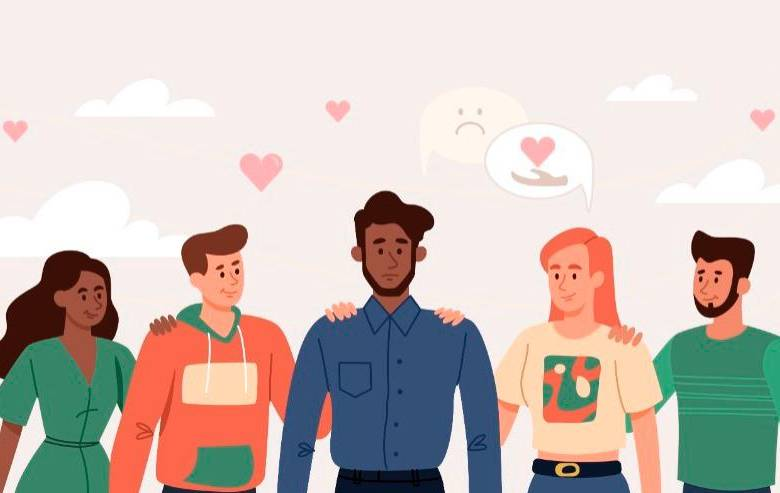

Bienvenido a nuestra Fundación
En la Fundación Aurora del Mañana estamos comprometidos con la erradicación de la violencia en todas sus formas. Trabajamos día a día para ofrecer apoyo integral a las víctimas y promover una cultura de paz y respeto por los derechos humanos.
Nuestra labor se centra en:
- Brindar asistencia emocional y legal a las víctimas de violencia.
- Crear programas educativos para prevenir la violencia y fomentar relaciones saludables.
- Colaborar con instituciones y comunidades para construir un entorno seguro y libre de violencia.
Explora nuestro sitio para conocer más sobre nuestras actividades, cómo puedes ayudar y cómo unirte a nuestra causa.
Misión
Nuestra misión es apoyar a las víctimas de la violencia proporcionando recursos y asistencia necesaria para su recuperación integral y reintegración en la sociedad.Queremos ser un faro de esperanza y cambio en la lucha contra la violencia, promoviendo una cultura de paz y respeto por los derechos humanos.
Nuestros servicios
Contamos con programas especializados en salud mental para ayudar a los victimas a superar sus dificultades y alcanzar su máximo potencial, a su vez, procurando el bienestar integral de nuestros participantes.
Contacto
Si deseas más información o quieres unirte a nuestros programas, no dudes en contactarnos a través de nuestro correo electrónico: contacto@auroradelmanana.org.

Únete
Si deseas colaborar con nosotros como voluntario, donante o socio, completa el siguiente formulario: